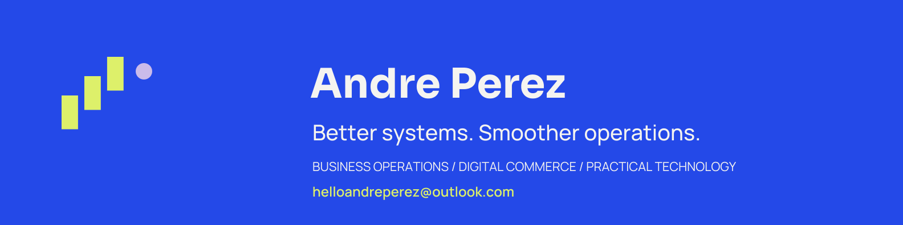
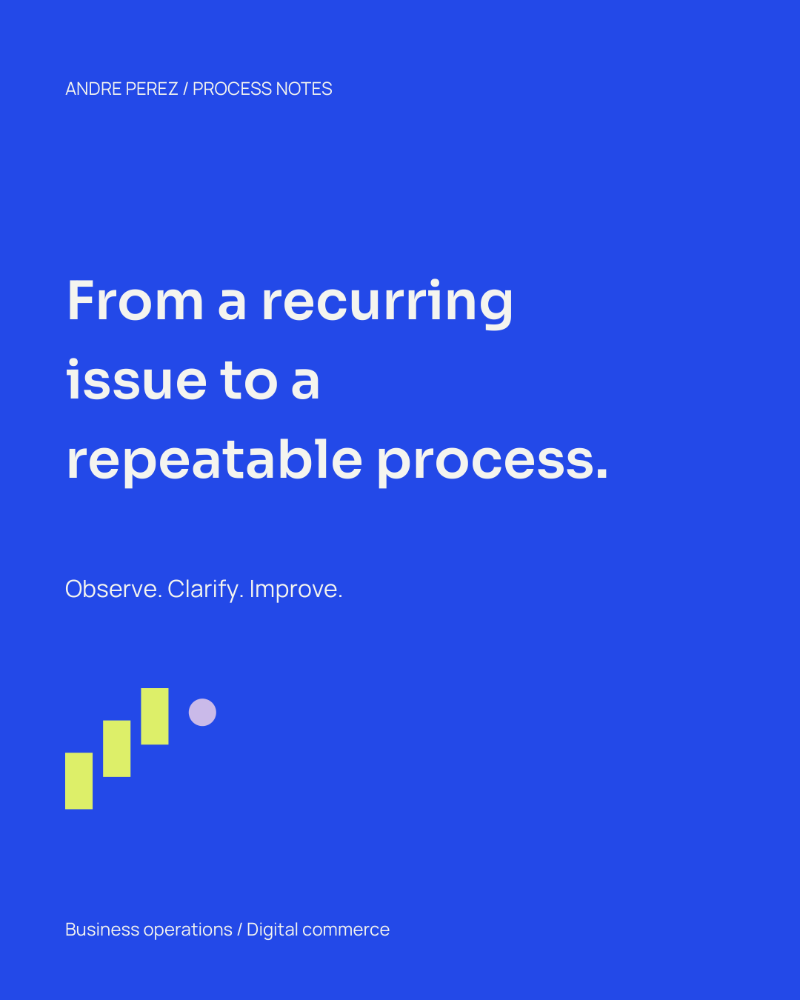

Bold & Expressive / Brand reference
Better systems.
Smoother operations.
Business operations. Digital commerce. Practical technology.
This is a local style reference for your brand kit. The components below demonstrate the supplied fonts, colors and spacing.
Colors
Bone
#F5F4F0
Night
#141820
Cobalt
#2449E8
Citron
#DDF06A
Lilac
#CABBEA
Typography & components
A clear hierarchy
Headlines use Sora. Body text uses Manrope at 18px with a comfortable reading width.
Supporting labels use 14px. Spacing follows a 4px foundation.
Primary surface
This foreground and background pairing is specified for readable text.
Keep accent colors for supporting graphic details.
Logo rules
Use the ink wordmark on light surfaces and the reverse wordmark on dark surfaces. Leave at least half the height of its capital A as clear space. Keep the wordmark at least 160px wide; use the initials when space is limited.
LinkedIn & social templates
PNG files are ready to upload. SVG files retain editable text; install the supplied font files before editing.

